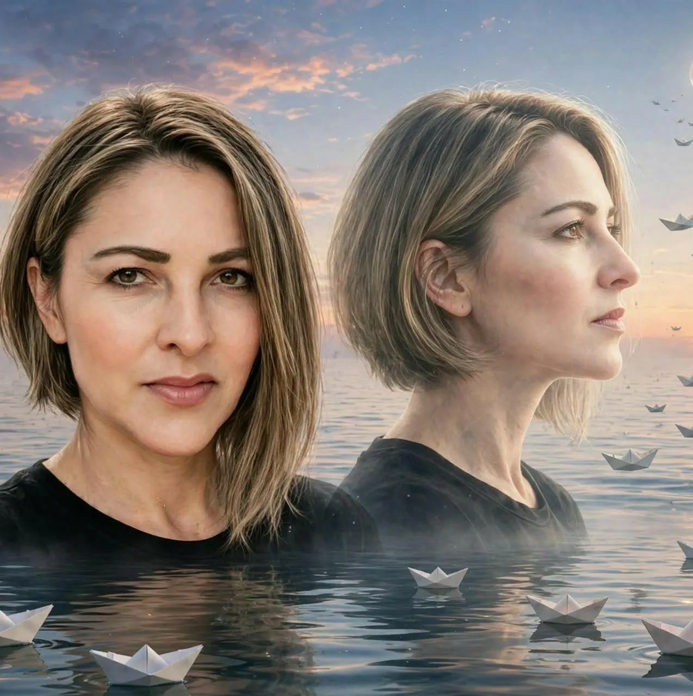
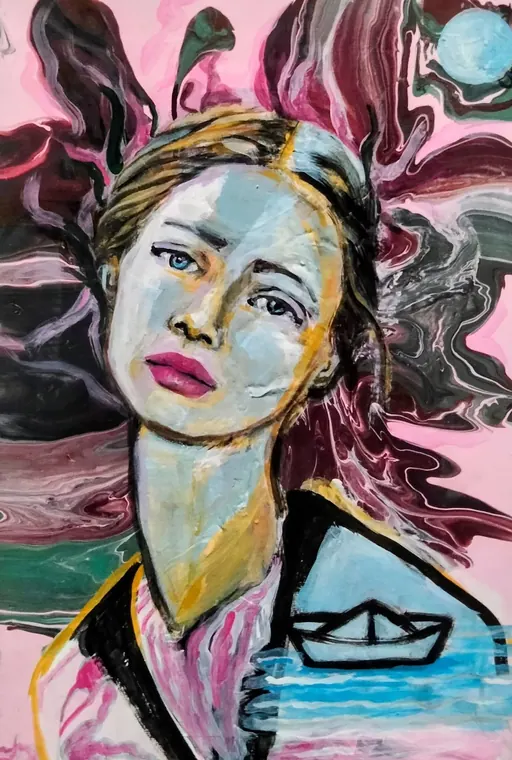
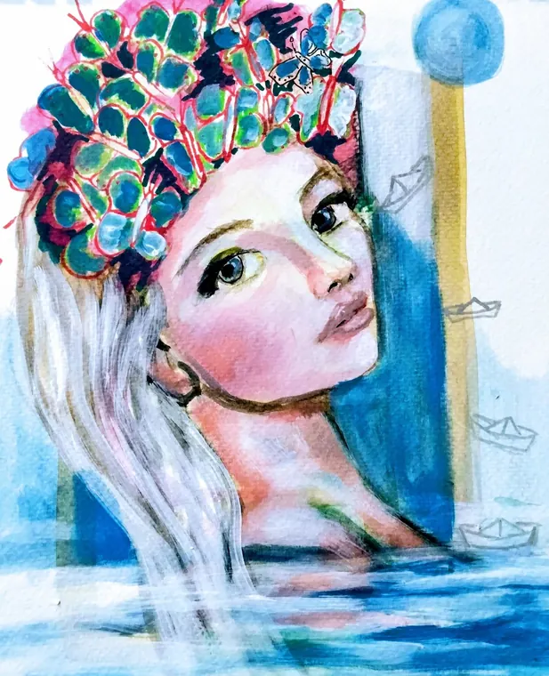
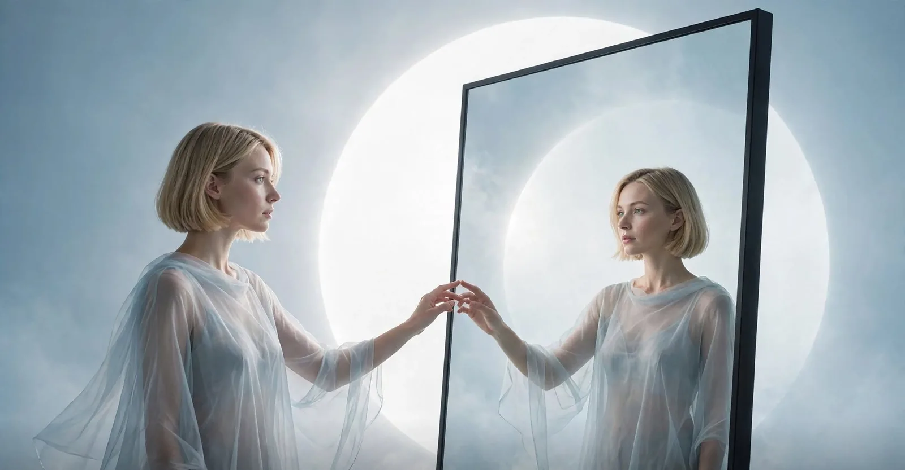
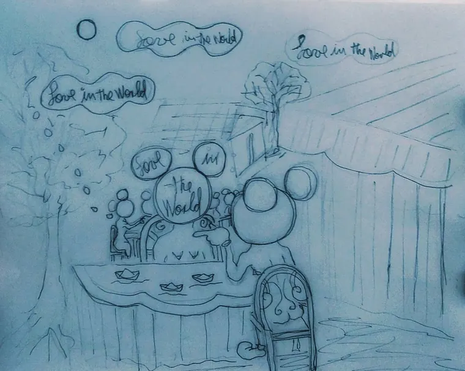
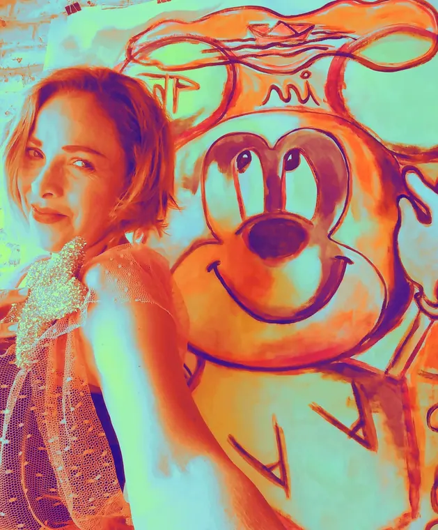
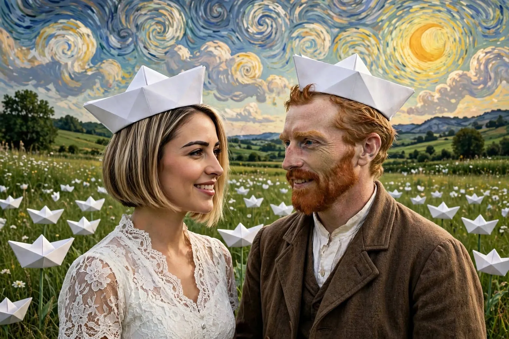

01 / 04
Barcos de amor
El barco de papel aparece una y otra vez: flota sobre el cabello, navega el agua, corona la cabeza. Es lo frágil que, aun así, avanza.
Ver piezas de pinturaTeresa Reyes
0% · doblando barcos de papel…
Love in the World
Teresa Reyes pinta barcos de papel, rostros y color para recordarnos algo sencillo: volver a nuestra forma más honesta para poder volver a amar.




“Es la humanidad volviendo a su forma más honesta para poder volver a amar.”
It is humanity returning to its most honest form in order to love again.
— Teresa Reyes
Su filosofía
Esa honestidad es la que cuelga en cada una de sus paredes.
Quiero entrar a su mundoObra destacada
Seis piezas para empezar. Desliza hacia abajo y deja que el color te encuentre.
Un rostro azul de calma, una marea de pigmento y un barco de papel esperando en el hombro.
Preguntar por esta obraUna corona de suculentas, el agua hasta el cuello y barcos que se alejan hacia la orilla.
Preguntar por esta obraPestañas dormidas, labios rojos y dos barcos de papel navegando sobre el azul.
Preguntar por esta obraRayas, cuadros y un barco dibujado en blanco: el orden y el caos compartiendo el mismo mar.
Preguntar por esta obraDos versiones de una misma mirada, frente al mar donde flotan los barcos de amor.
Preguntar por esta obraUn beso en azul y un cabello de tierra. Todo lo que no se dice, dibujado.
Preguntar por esta obra¿Te quedaste con ganas de más?
Clic aquí y recorre el archivo completoLas series
Hay símbolos que no se explican: se repiten hasta que dejan de ser dibujo y se vuelven lenguaje. Estos son los cuatro que sostienen la obra de Teresa.
01 / 04
El barco de papel aparece una y otra vez: flota sobre el cabello, navega el agua, corona la cabeza. Es lo frágil que, aun así, avanza.
Ver piezas de pintura02 / 04
Las figuras desnudas no son cuerpos: son almas en estado original, sin juicios, sin pasados, sin armadura. Se tocan con su propio reflejo y no tienen miedo.
Ver mundos visuales03 / 04
Una frase escrita a mano que reaparece en sus bocetos: en nubes, en mesas, en cestas. Amor, en el mundo, para todos y en todas partes.
Ver bocetos y dibujos
04 / 04
Rosas eléctricos, azules de mar, naranjas de atardecer. En la obra de Teresa la paleta no decora: declara.
Jugar con el color

Un paisaje posible
Un campo entero de barcos de papel, un cielo que gira y dos miradas que se reconocen.
Clic aquí y recorre el archivoPortafolio
Todas las piezas de esta muestra. Toca una para verla en grande y preguntar por ella.
¿Alguna te hizo ruido por dentro?
Cuéntale a Teresa cuálSerie pop
Elige un panel y deja que Teresa pinte el resto.
Rosa: ternura que no pide disculpas.
Quiero mi colorEl proceso
Así llega una idea de la libreta a la pared. Sigue al barco.
Paso uno
Todo empieza en una libreta: nubes, barcos, frases escritas a mano y una idea que no cabe en la cabeza.
Paso dos
Entre pinceles, pintura y un caballete blanco, la idea toma cuerpo y empieza a pedir color.
Paso tres
El pigmento corre, se mezcla, se detiene. Y de pronto el barco ya sabe a dónde va.
Paso cuatro
Si hay una idea que quieres ver convertida en color, este es el momento de contársela.
Cuéntale tu idea a TeresaLa artista
Teresa es artista visual. Pinta, dibuja y mezcla técnicas —acrílico, acuarela, tinta, pastel— para contar una sola historia: la de un amor que vuelve al mundo sin armaduras.
Su símbolo es el barco de papel: pequeño, frágil e imposible de ignorar. Lo pone en el cabello, en el agua, sobre la cabeza de sus retratos, y lo acompaña de una frase que escribe a mano, una y otra vez: Love in the World.
“Almas en estado original, desnudas de juicios, de pasados, sin coraza alguna.”
Teresa Reyes
Hablemos
Escribe tu mensaje y se abrirá WhatsApp con todo listo para enviárselo directo a Teresa. Sin formularios eternos, sin intermediarios.
WhatsApp directoEscríbele ahora mismo FacebookTeresa Reyes · su comunidad